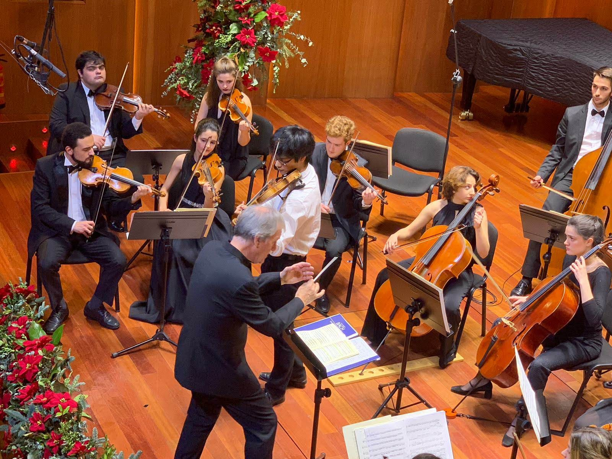

About Mon-Fu
Mon-fu was born in 1999. Following his dream and passion he began his musical journey by listening to viola da gamba. This inspired him to take onto the violin, one in which he would then find great success and becoming a world class soloist and a respected member of the great virtuosos of the 21st Century.

Vivaldi winter tour 2019
Mon-Fu's Career
- 2020 Munich hochschule admission
- Awarded the Royal spain price for ascending talents
- 2020 Moniguetti baroque tour
- International competition pedro bote prize winner
Stay updated on Mon-fu's upcoming events
Follow him on social media: